Projects · Finishing
Stamped Slate Driveway & Walkway
A side driveway poured, formed, and finished with a random-ashlar slate stamp and two-tone stain.
Overview
From Rebar to Finished Stone
This side driveway and walkway started with a formed and reinforced base — grid rebar set over gravel, ready for the pour. Once placed, we stamped the surface in a random-ashlar slate pattern and applied a two-tone stain for natural depth and color variation from the garage to the front entry. The result replaces a plain slab with a durable, stone-look surface that ties the whole side yard together.
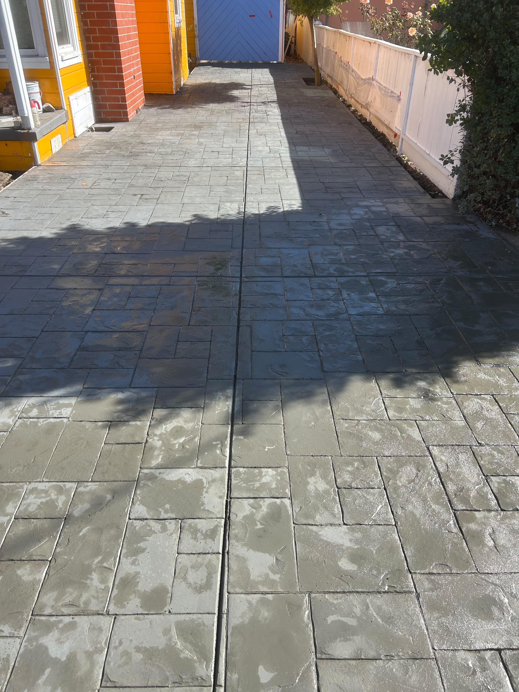
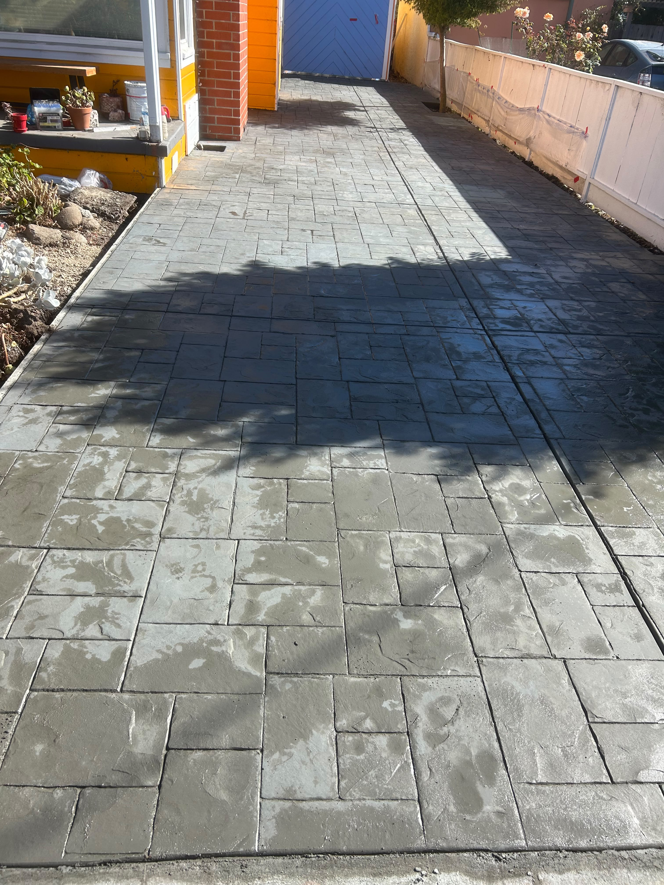
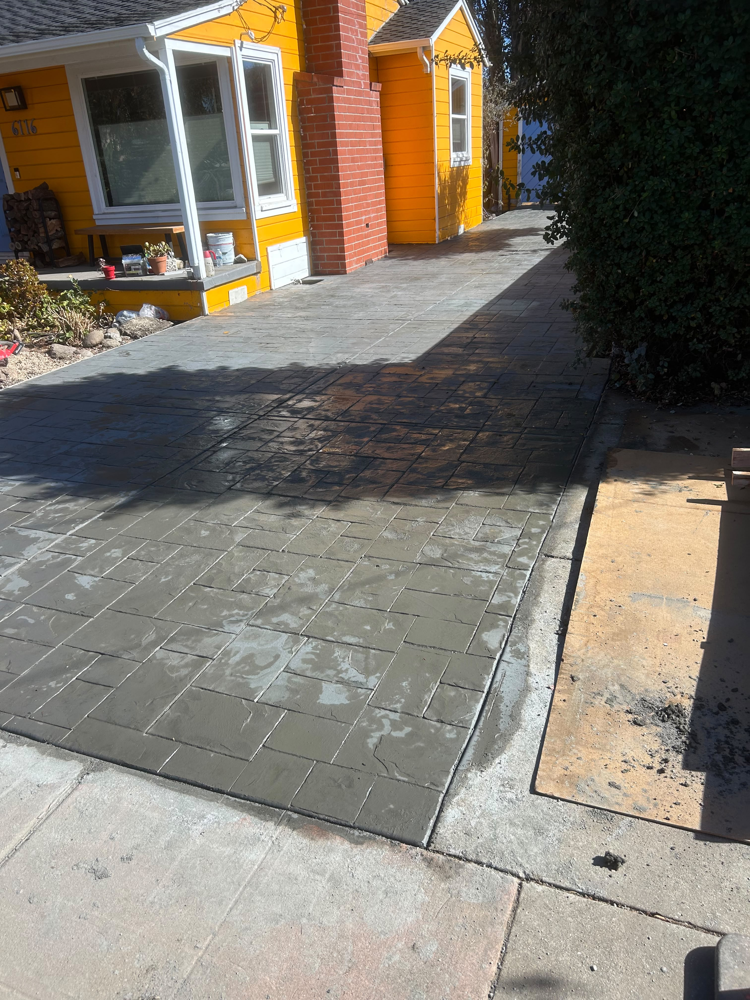
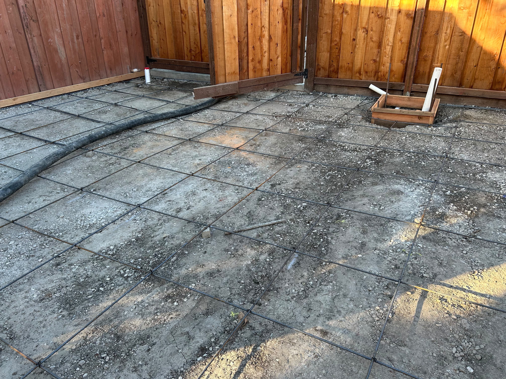
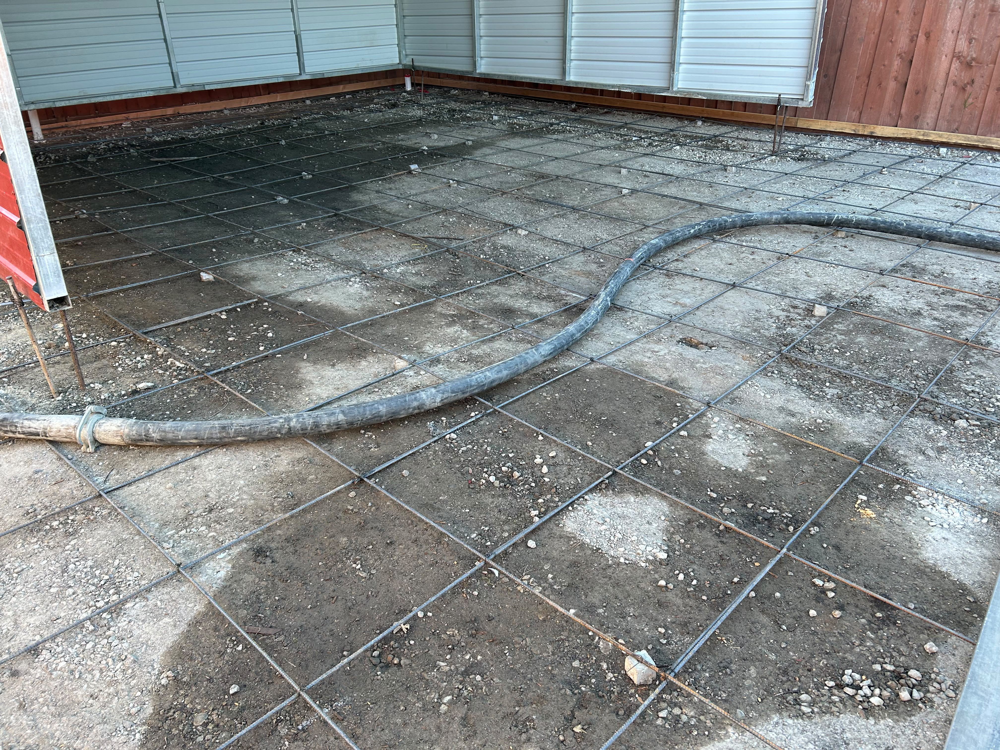
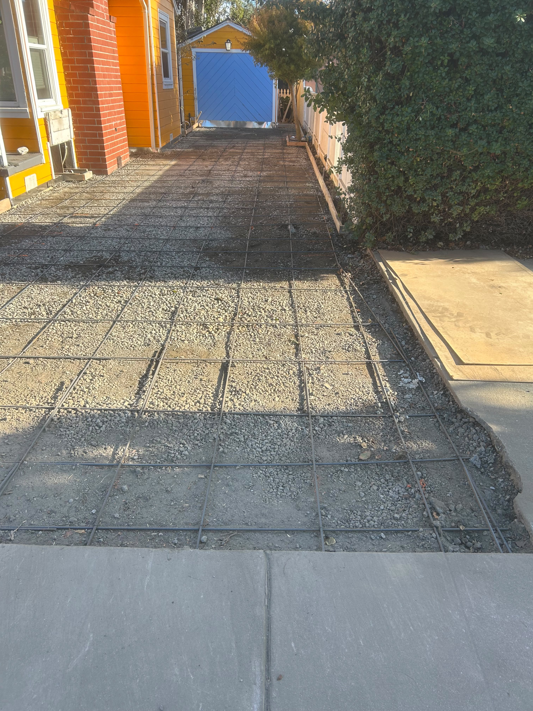
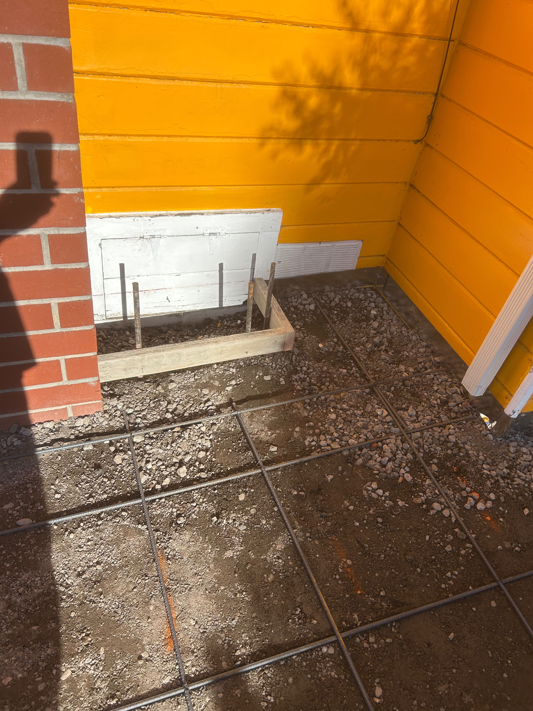
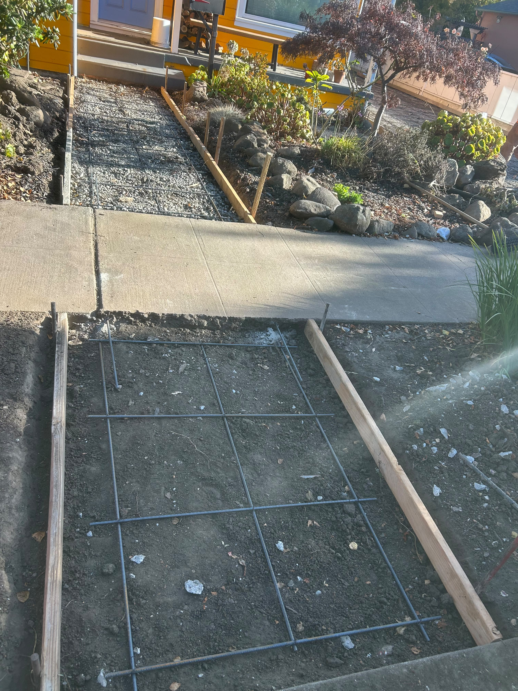
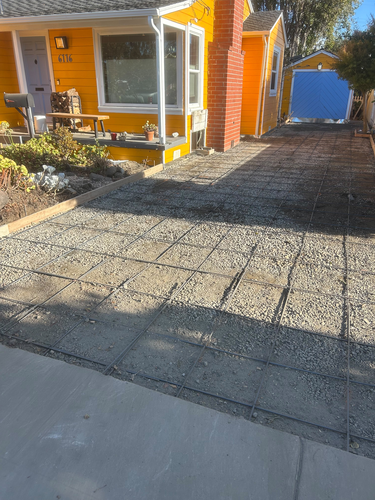
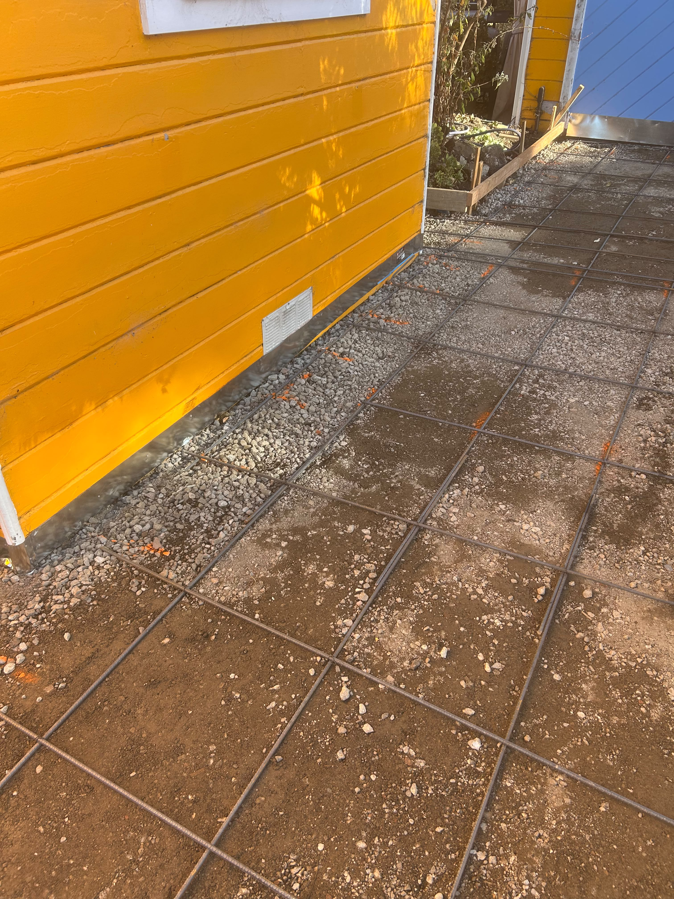
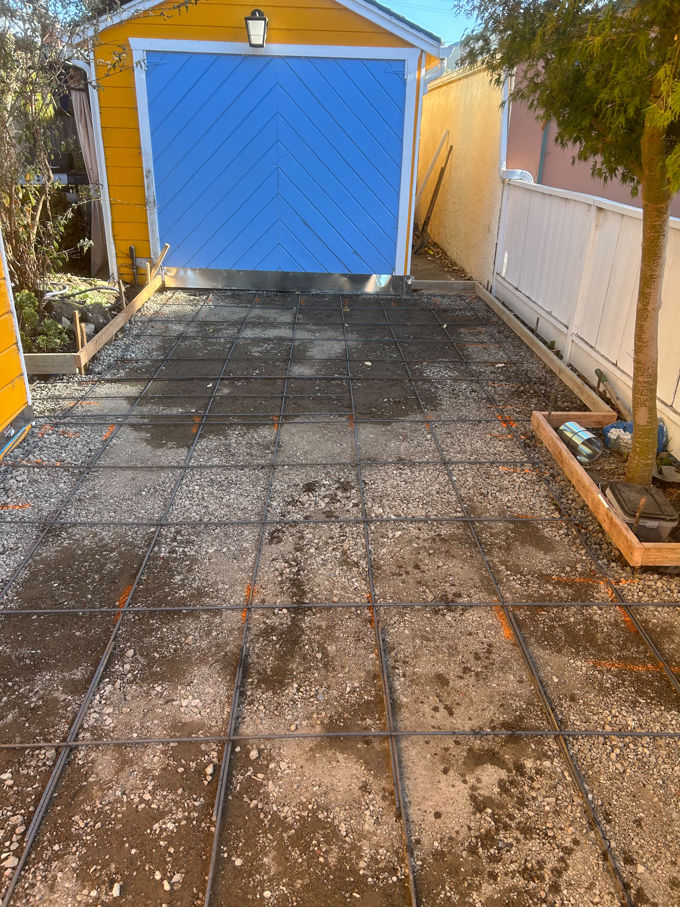
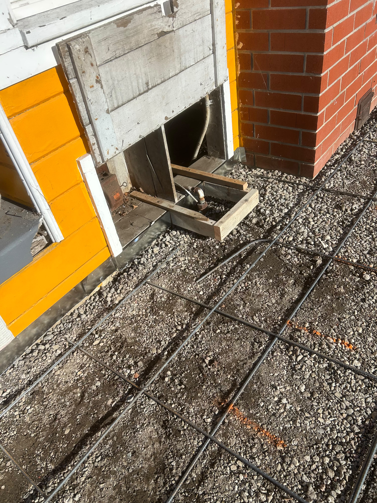
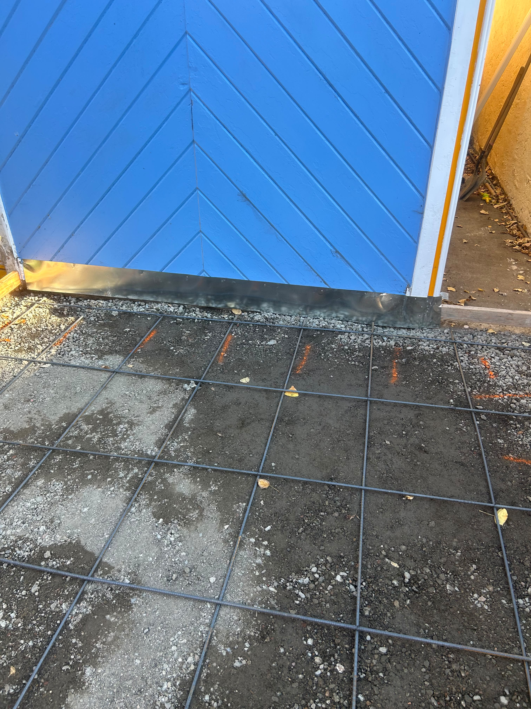
Want a Stamped Driveway or Walkway?
Call us to talk through your project — we're happy to share more examples of our stamped and stained finishes.
Call (510) 675-5275